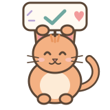

A study companion for The Self-Esteem Workbook for Teens
A steadier way to see yourself
Self-esteem is not a prize you win. It is a way of seeing yourself that you can practise. This book gives you 46 short activities for it — and you don't need all of them.
Read at your own speed. Nothing here is a test, and nothing is timed.

The whole book on one map
mindmap
root((46 small tools))
What self-esteem is, and who holds the power
1 What Is Healthy Self-Esteem?
3 Claim Your Intrinsic Value and Worth
6 The Power of Self-Compassion
Being you with family, friends and society
7 The Perfection of Diversity
9 Who You Are for Your Family
11 Who You Are for Society
Discovering yourself
12 It's Normal to Not Know
16 Discovering Your Passions
20 The Power of Intuition
Your body, other people's opinions, and relationships
21 Your Body Image: How to Fight False Facts
26 Assertive Communication
31 The Look of Healthy Self-Esteem
Inner skills and habits of mind
32 The Power of Managing Feelings
35 Thinking Habits That Help or Hinder
38 The Power of Possibility
Conviction, responsibility, goals and asking for help
39 The Power of Conviction
42 The Power of Facing Challenges Head-On
46 Smart People Ask for HelpSix parts, three example activities each (the six-part grouping is ours)
All 46 activities
1What Is Healthy Self-Esteem?2Recognize Your Power3Claim Your Intrinsic Value and Worth4Release Devaluing Messages5Choose Positive Self-Messages6The Power of Self-Compassion7The Perfection of Diversity8Your Authentic Self Is Your Best Self9Who You Are for Your Family10Who You Are for Your Friends11Who You Are for Society12It's Normal to Not Know13Discovering Your Likes and Dislikes14Discovering Your Dreams15Discovering Your Beliefs16Discovering Your Passions17You in the Universe18Why You Are Here19Celebrate Your Strengths, Work with Your Weaknesses20The Power of Intuition21Your Body Image: How to Fight False Facts22Your Body Image: Loving the Body You Have23About Judgment24Take Charge of Social Media25How to Talk to People: Basic Social Skills26Assertive Communication27Don't Take Everything Personally28No One Is Liked by Everyone29Peer Pressure30Setting Healthy Boundaries31The Look of Healthy Self-Esteem32The Power of Managing Feelings33Tolerating Discomfort34The Power of Inner Peace35Thinking Habits That Help or Hinder36Accepting Mistakes37The Power of Gratitude38The Power of Possibility39The Power of Conviction40The Power of Responsibility41The Power of Positive Decisions42The Power of Facing Challenges Head-On43Setting Realistic Goals44Problem-Solving Skills45It's Never Too Late to Turn Things Around46Smart People Ask for Help
Your progress (only on this device): 0 / 46
The book in one minute
- First, what healthy self-esteem is and who holds the controls: your worth does not depend on winning, and the messages that put you down can be let go (Activities 1–6).
- Then being you in a family, among friends and in society, and discovering who you are: likes, dreams, beliefs, passions, strengths, weaknesses, intuition (7–20).
- Next, your body image, other people's opinions and the skills of getting along: social media, judgment, assertiveness, boundaries, peer pressure (21–31).
- Finally, inner skills and habits — feelings, discomfort, inner peace, thinking habits, mistakes, gratitude, possibility (32–38) — then conviction, responsibility, goals and asking for help (39–46).
Three ways to read — all of them count
 Just listenPut on headphones. One episode per part or question. That counts as reading.
Just listenPut on headphones. One episode per part or question. That counts as reading. Just maps and cardsLook at the map of each activity, flip its cards. Ten minutes a day is plenty.Read it allOne activity at a time, one screen at a time, with the workbook open next to you.
Just maps and cardsLook at the map of each activity, flip its cards. Ten minutes a day is plenty.Read it allOne activity at a time, one screen at a time, with the workbook open next to you.Stuck or tired? See It's OK not to finish.
What you'll have when you're done

Your own toolkitThree to five practices you have actually tried and know work for you — not 46 you've only read about.Cards you can answer with the book closedA stack of question cards you can explain in your own words. That's what remembering really looks like.A way to take notes for any bookMind maps, Cornell notes, one-page summaries — tried once here, yours to keep for school and beyond.About the book
| Title | The Self-Esteem Workbook for Teens: Activities to Help You Build Confidence and Achieve Your Goals |
| Author | Lisa M. Schab, LCSW (a licensed clinical social worker) |
| Edition | Second edition (first edition 2013) |
| Publisher | Instant Help Books, an imprint of New Harbinger Publications (Oakland, CA) |
| Shape | 46 short activities, about 220 pages. Each has four parts: something to know, something to try, a second thing to try, and a closing affirmation — with space to write and draw. |
| Our map | The book itself has no parts; this six-part grouping is ours, to give a map of the 46 activities. |
If you often feel worthless, hopeless or unsafe — or if these thoughts get in the way of school, sleep or friends — tell an adult you trust. In Canada you can call or text 9-8-8 any time, or reach Kids Help Phone: call 1-800-668-6868 or text CONNECT to 686868. This site is a study companion to a book, not treatment.